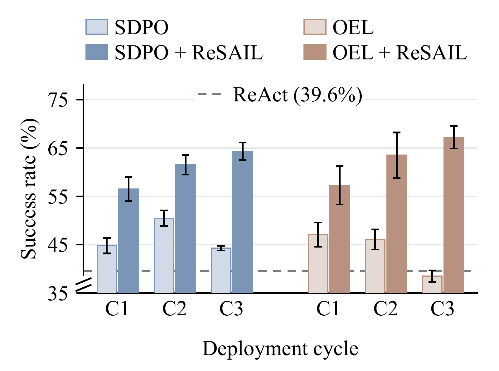
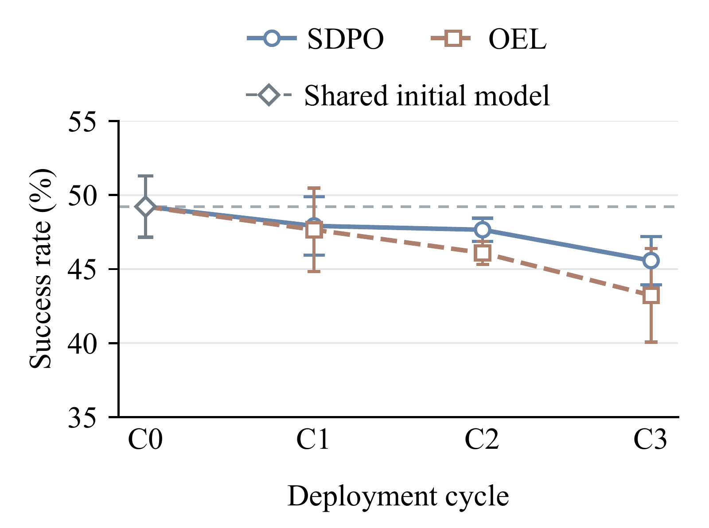
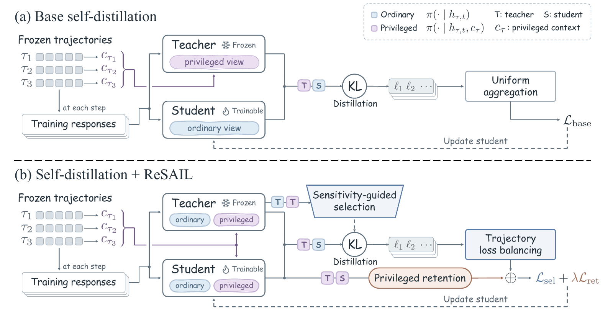

Agent self-distillation · arXiv 2026
ReSAIL: Mitigating Collapse in Iterative Agent Self-Distillation
Gaoling School of Artificial Intelligence, Renmin University of China
Our findings provide the first evidence that a more robust learning mechanism can effectively mitigate performance collapse in iterative agent self-distillation over deployment trajectories.




Figure 1. ALFWorld OOD · Qwen3-4B. Deployment performance improves with ReSAIL, while the original methods lose task competence with privileged information (PI) across cycles. Cycle 0 is the shared initial model; error bars show standard deviation across three decoding seeds.
When the student becomes the next teacher
Repeated self-distillation should turn deployment experience into a better agent. Yet SDPO and OEL can lose task performance over successive cycles. Their task competence with privileged information (PI)—additional context available during training—also declines, even when the evaluation tasks and PI are held fixed.
Every updated model has two roles: act without PI during deployment, and teach with PI in the next cycle. The base distillation objective trains only the deployment view. It does not explicitly preserve the privileged behavior needed to supervise the next student.
This leads to two questions: which interaction steps provide the most informative supervision, and how can the updated student retain its ability to teach? ReSAIL addresses both through selective distillation within a cycle and privileged retention across cycles.
Selective distillation and privileged retention


Trajectory-balanced selective distillation
Sensitivity-Guided Selection (SGS) measures how strongly PI changes the frozen teacher’s predictions, using Jensen–Shannon divergence between its ordinary and privileged views. Distillation prioritizes the most PI-sensitive interaction steps.
Trajectory Loss Balancing (TLB) then averages selected losses within each trajectory and across the trajectory batch. Trajectories with more selected steps therefore do not dominate the objective.
Privileged retention
Privileged Retention (PR) aligns the student’s PI-conditioned output distributions with those of the frozen teacher, at both selected and unselected steps. This preserves the privileged behavior used to provide supervision when the student becomes the next teacher.
Performance over three deployment cycles
On ALFWorld ID, ALFWorld OOD, and TextCraft, ReSAIL improves the final-cycle success rate over its corresponding parent methods. The reported average gain of 22.5 percentage points covers two baselines × two model scales × three evaluation settings.
Table 1 · Main results across deployment cycles
Scroll horizontally to view all columns →
| Method | ALFWorld (ID) | ALFWorld (OOD) | TextCraft | ||||||
|---|---|---|---|---|---|---|---|---|---|
| Cycle 1 | Cycle 2 | Cycle 3 | Cycle 1 | Cycle 2 | Cycle 3 | Cycle 1 | Cycle 2 | Cycle 3 | |
| Qwen3-4B | |||||||||
| ReAct | 40.1 ± 2.3 | — | — | 39.6 ± 1.8 | — | — | 61.3 ± 1.5 | — | — |
| RFT | 43.2 ± 2.7 | 44.8 ± 4.4 | 41.9 ± 6.6 | 39.3 ± 4.6 | 42.2 ± 1.4 | 43.2 ± 3.9 | 59.7 ± 0.6 | 62.3 ± 5.5 | 60.7 ± 2.5 |
| GRPO | 39.1 ± 2.1 | 36.5 ± 1.2 | 37.5 ± 2.3 | 45.1 ± 1.2 | 42.2 ± 1.6 | 50.3 ± 2.0 | 60.3 ± 1.2 | 58.7 ± 2.3 | 56.7 ± 2.3 |
| EPD | 45.6 ± 1.2 | 36.7 ± 3.4 | 22.1 ± 0.5 | 43.2 ± 2.7 | 31.5 ± 3.2 | 18.2 ± 3.5 | 63.3 ± 0.6 | 62.0 ± 2.6 | 62.3 ± 3.5 |
| SDPO | 52.3 ± 1.6 | 53.4 ± 2.0 | 58.9 ± 1.6 | 44.8 ± 1.6 | 50.5 ± 1.6 | 44.3 ± 0.5 | 62.7 ± 2.3 | 64.7 ± 0.6 | 60.3 ± 4.5 |
| SDPO + ReSAIL | 66.4 ± 2.1 | 72.1 ± 1.6 | 72.4 ± 0.9 | 56.5 ± 2.5 | 61.5 ± 2.0 | 64.3 ± 1.8 | 64.7 ± 1.2 | 66.3 ± 2.9 | 67.3 ± 1.2 |
| OEL | 54.9 ± 4.7 | 56.5 ± 2.0 | 47.4 ± 1.2 | 47.1 ± 2.5 | 46.1 ± 2.1 | 38.5 ± 1.2 | 62.0 ± 3.6 | 54.7 ± 1.5 | 43.7 ± 1.5 |
| OEL + ReSAIL | 62.2 ± 2.0 | 70.1 ± 3.2 | 74.2 ± 1.4 | 57.3 ± 4.0 | 63.5 ± 4.7 | 67.2 ± 2.3 | 63.3 ± 1.5 | 64.0 ± 3.6 | 64.0 ± 2.6 |
| Qwen3-8B | |||||||||
| ReAct | 49.5 ± 2.4 | — | — | 57.0 ± 3.9 | — | — | 64.0 ± 1.0 | — | — |
| RFT | 50.0 ± 2.8 | 52.1 ± 2.5 | 52.1 ± 2.7 | 60.4 ± 1.2 | 61.2 ± 1.8 | 63.8 ± 5.3 | 66.0 ± 4.4 | 62.7 ± 2.5 | 58.7 ± 2.1 |
| GRPO | 53.1 ± 4.9 | 47.4 ± 1.2 | 48.2 ± 2.5 | 62.8 ± 5.0 | 65.4 ± 3.5 | 62.2 ± 1.2 | 57.0 ± 2.6 | 64.3 ± 2.1 | 59.3 ± 2.1 |
| EPD | 68.0 ± 2.3 | 67.2 ± 2.8 | 53.4 ± 2.7 | 62.0 ± 1.6 | 56.0 ± 1.2 | 46.6 ± 3.9 | 65.7 ± 2.3 | 65.0 ± 2.6 | 64.3 ± 0.6 |
| SDPO | 71.4 ± 1.6 | 72.1 ± 1.2 | 61.2 ± 3.9 | 66.1 ± 2.7 | 64.1 ± 4.1 | 49.2 ± 2.8 | 63.0 ± 1.0 | 62.3 ± 2.3 | 51.0 ± 2.0 |
| SDPO + ReSAIL | 75.5 ± 1.8 | 80.5 ± 1.4 | 82.0 ± 1.4 | 72.1 ± 5.2 | 73.2 ± 0.9 | 75.3 ± 1.2 | 65.7 ± 2.3 | 70.7 ± 3.1 | 73.3 ± 1.5 |
| OEL | 72.4 ± 0.5 | 73.4 ± 3.9 | 58.3 ± 0.9 | 66.7 ± 2.7 | 61.7 ± 5.5 | 41.4 ± 1.4 | 63.0 ± 2.6 | 61.3 ± 1.5 | 51.3 ± 0.6 |
| OEL + ReSAIL | 73.7 ± 2.7 | 79.2 ± 1.2 | 82.8 ± 1.6 | 70.8 ± 3.5 | 73.4 ± 2.3 | 78.4 ± 1.2 | 69.0 ± 2.6 | 72.3 ± 1.2 | 73.7 ± 1.5 |
Task success rate (%), mean ± standard deviation across three decoding seeds. Success is measured without PI. ReAct is the unchanged initial policy, displayed once under Cycle 1 as a fixed reference across cycles; SDPO uses the paper’s offline adaptation. Bold values mark the best result within each model block for each setting and cycle.
Experimental setting
Full-method evaluation: ALFWorld ID/OOD and TextCraft, Qwen3-4B/8B, three deployment cycles. Multimodal transfer: sensitivity-guided selection improves offline action prediction on AITZ, from 64.89% to 65.95% at update 100 in the reported single-cycle experiment.
BibTeX
@misc{jin2026resail,
title = {ReSAIL: Mitigating Collapse in Iterative Agent Self-Distillation},
author = {Shengjie Jin and Hengbo Xu and Zelong Sun and YuJie Guo and Zhiwu Lu},
year = {2026},
eprint = {2609.39306},
archivePrefix = {arXiv},
url = {https://arxiv.org/abs/2609.39306}
}